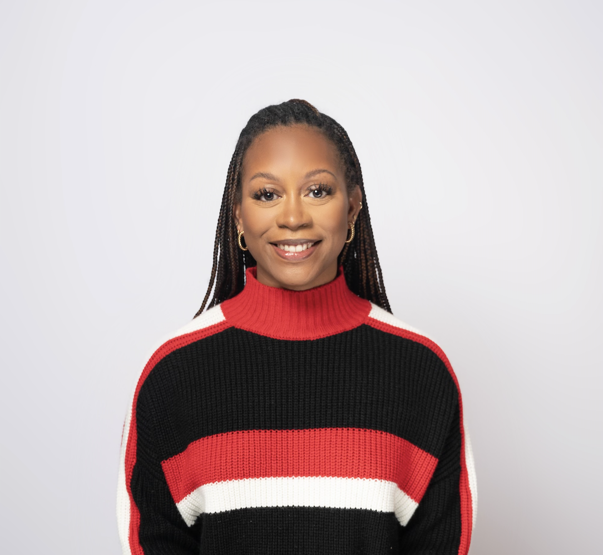
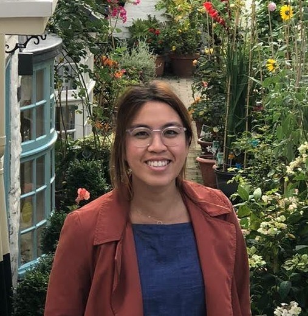
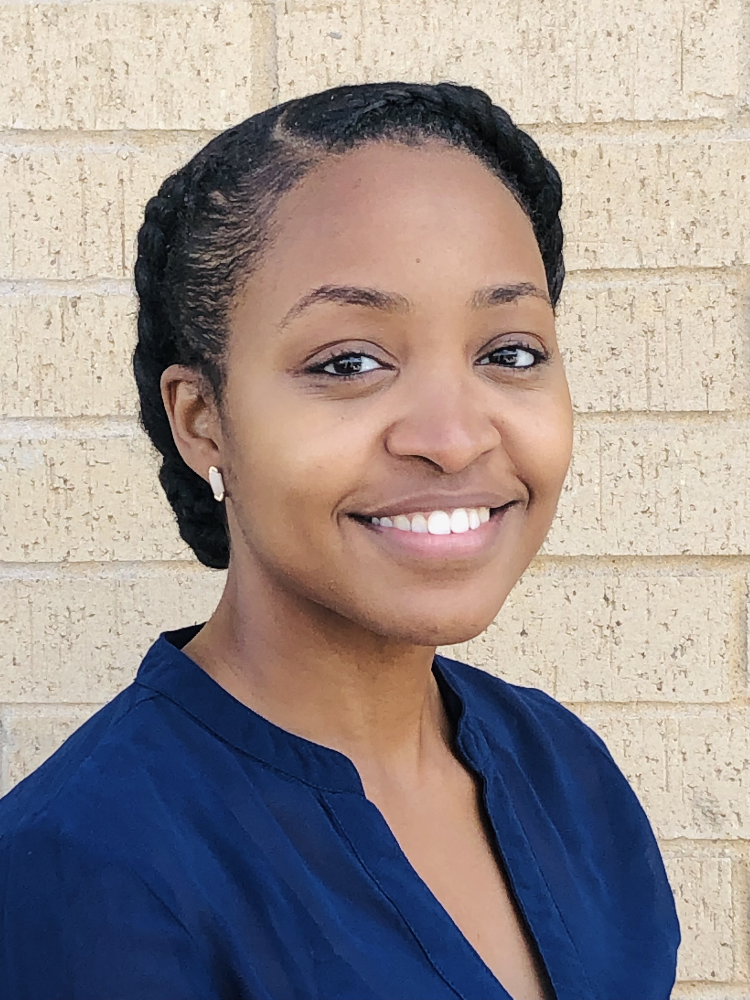
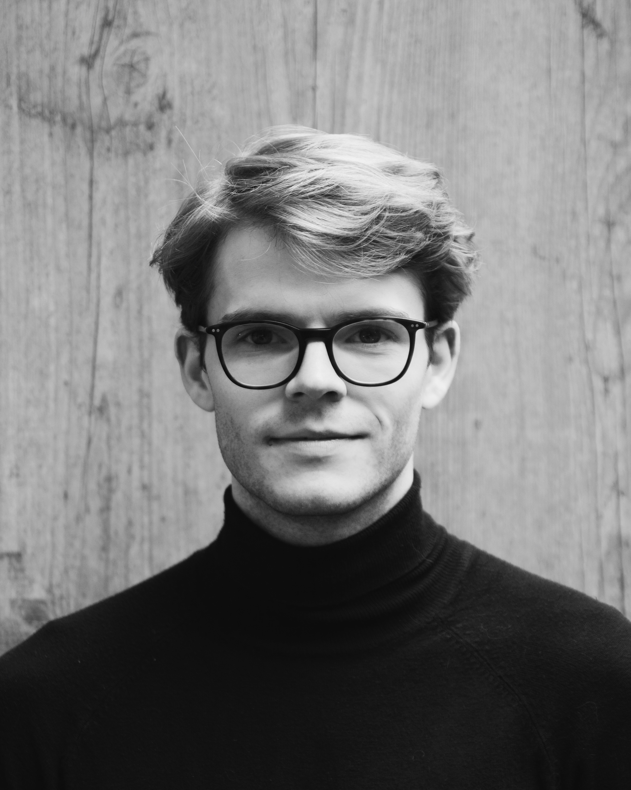
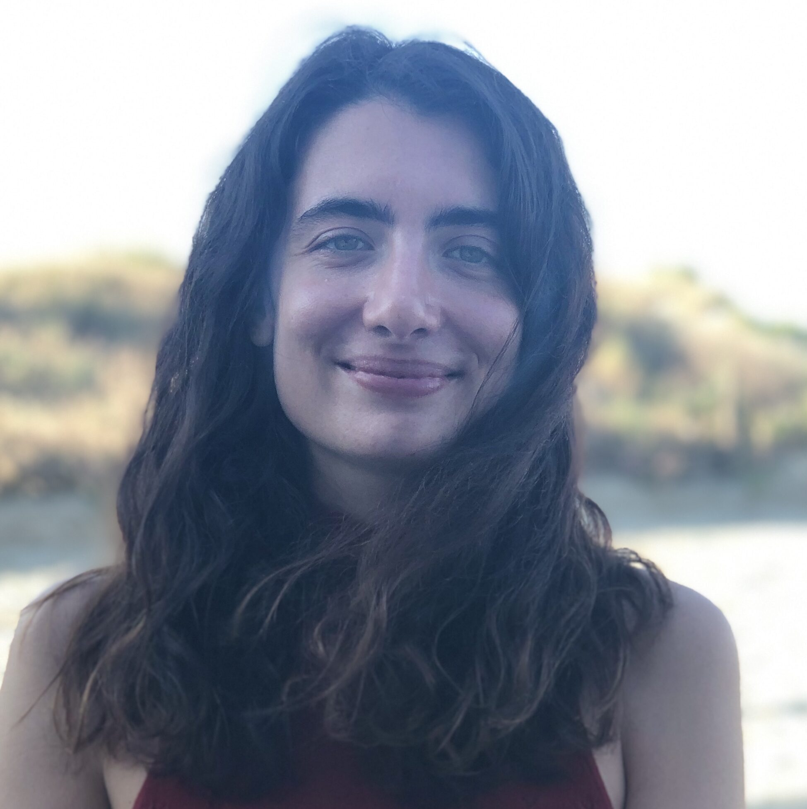
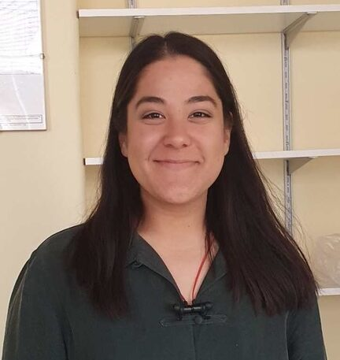
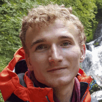
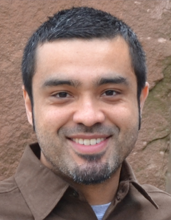
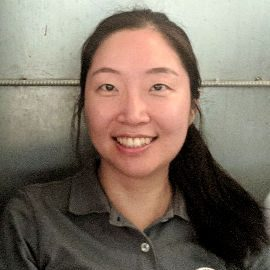

PhD scientists teaching and building STEM capacity worldwide
Science Corps welcomes applications from individuals who have recently completed or will soon receive a PhD in a STEM (Science, Technology, Engineering or Mathematics) discipline, but who have not yet begun a faculty or similar level position. You may apply up to four years after you have received your PhD degree. If you become a Fellow, we will ask you to commit six months to the program. This will allow time for acclimation and orientation, a complete school semester, and a concluding period. There is no nationality or age restriction.
Science Corps Fellows have a combination of the following core roles on site:

Adriane earned her Ph.D. in marine ecology from the University of California, Santa Barbara, where her research focused on investigating the impact of marine heatwaves on the reproduction and early development of the purple sea urchin, Strongylocentrotus purpuratus. During her dissertation work, Adriane developed a strong passion for teaching, science communication, and outreach. Outside of research, Adriane enjoys reading, baking, hiking, and exploring new areas and foods.
Read her updates →
An earned her PhD in Plant Sciences from the University of Cambridge, where she investigated how microalgae can be produced on a large scale for high-value bioproducts. Her curiosity about the microbial world inspired her postdoctoral research at the Massachusetts Institute of Technology, where she studies marine microbes associated with particles and their roles in global biogeochemical cycles. An is passionate about science communication and making scientific knowledge accessible to all. When she's not in the lab, you'll likely find her outdoors, hiking, climbing, or sailing.
Read her updates →
DaNae received her PhD in biological chemistry from the University of Texas Southwestern Medical Center, where her research focused on uncovering the molecular mechanisms underlying retinal degenerative diseases. She continued as an IRACDA postdoctoral fellow at UC San Diego. Beyond the lab, DaNae is passionate about teaching and mentoring students, and loves to blend art and science — including crocheting cell models! — to inspire students to pursue STEM opportunities.
Read her updates →
Markus is a pharmacist by training and holds a PhD in genetics from ETH Zürich, where his work focused on early mouse embryonic development. He is passionate about teaching and eager to introduce innovative study concepts into the curriculum. Markus actively supported CVIF's research group in testing the genetic diversity of local marine life. In his free time, he enjoys playing the piano, running on trails, and working his way through a never-ending reading list.

Bianca obtained her PhD in applied physics at Northwestern University, where she focused on employing computational methods for the discovery and characterization of new materials for renewable energy applications. Before that, she had a wonderful time during her MSci degree in physics at University College London (UCL). She is passionate about sustainable development and community building.
Read her update →
Ilayda earned her PhD in Materials Science focusing on using collagen-based scaffolds for tissue engineering and regeneration from the University of Oxford, St Catherine's College. She received her MEng from the University of Exeter in Materials Engineering. Outside of her research, Ilayda has a strong passion for outreach work, especially in bringing the joys and endless scope of Materials Science to the younger generations.

Kris received his PhD in evolution and ecology from the University of East Anglia (UEA), UK, in 2021. He studied the link between fertility in insects and climate change. Since receiving his degree, he worked at UEA, the Norwegian Polar Institute, and UK federal government agencies. His work mostly focused on improving climate change adaptation, human health, and biodiversity. Kris has a passion for science and providing equal opportunities in STEM education.
Swastika is an evolutionary biologist from New Delhi, India. Her research is focused on how natural selection shapes interactions within social groups, species, and ecological communities. She recently finished her PhD at the University of Cambridge on a Dr. Manmohan Singh Scholarship from St. John's College. Swastika also led Science Corps' Filipinas in STEM interview series, documenting the stories of Filipino women scientists for a global audience.
Chrissy earned her Ph.D. in Environmental Health and Toxicology from Duke University in 2022. Her thesis research focused on understanding how environmental contaminants during pregnancy impact the health of mothers and their babies. She earned doctoral certificates in both Global Health and College Teaching, and completed a Morehead Science & Planetarium IMPACTS Fellowship. Chrissy is passionate about science education and outreach, especially in underserved communities.

Victor is now a Scholar in bioinformatics and computational biology at the American Museum of Natural History in New York. He did his PhD in Evolutionary Biology at University College London (UCL). Before joining Science Corps as an Education-Advancement Special Fellow, Victor did postdoctoral research at RIKEN in Tokyo and at the University of Munich. He is passionate about the power of education to build a more equal and inclusive world.

Jin is currently a Postdoctoral Fellow in the Banfield Laboratory at the University of California, Berkeley. She completed her PhD in Bioengineering at the École Polytechnique Fédérale de Lausanne (EPFL) in Switzerland. She is passionate about computer-based research, and how it can be used in locations with comparatively limited resources to produce world-class science.
Matt is currently a postdoc at the University of Virginia in affiliation with three Department of Energy laboratories. He received his Ph.D. in physics from Stanford University and specializes in experimental particle astrophysics. Matt also obtained a dual degree in physics and mechanical engineering from Oakland University. He is passionate about spreading scientific literacy and believes that providing proper STEM education can help improve the lives of people in developing countries.
Doug is currently preparing to apply for medical school. He received his PhD in Chemistry at the Massachusetts Institute of Technology (MIT). His backgrounds include nuclear magnetic resonance (NMR), laser spectroscopies, and photoacoustics of condensed matter. Doug is passionate about expanding scientific literacy for curious young minds with various socioeconomic backgrounds. He taught calculus-based Physics 1 and Chemistry 2 at CVIF.
Patti earned her B.S. in Biology at the Georgia Institute of Technology and completed her PhD in Neuroscience at the University of Pennsylvania in December 2020. As a graduate student, she used tissue engineering to build living scaffolds to regrow injured nerves and studied basic mechanisms of nerve regeneration in zebrafish. She created STEM outreach programs for students in Philadelphia Public Schools, including a neuroscience curriculum for early elementary students.
Tanvi is currently a Data Scientist at Meta. She finished her PhD in Geology, with a PhD minor in Management Science and Engineering at Stanford University. She taught Machine Learning applications and Earth Science as a Science Corps fellow. Tanvi believes that access to good science education can elevate living for many, and has mentored students who have secured positions in academic research and industry.
Betsy is currently an AAAS Science & Technology Policy Fellow at the US State Department in the office of Science and Technology Cooperation. She holds a Ph.D. in Chemistry from the University of Southern California where she designed and made semiconducting plastics for use in flexible electronics. Betsy is passionate about energy, the environment, and building scientific capacity in developing countries.
Gabriela is now an Intellectual Property Specialist at Advanced Clinical Pharmaceuticals. As a HHMI Gilliam Fellow, she obtained her PhD at the University of Arizona before moving to California to continue her career as a postdoctoral research fellow at Stanford University. As a scientist, Gabriela develops and applies chemical tools to better understand biological questions that have an impact on improving global health.
View fellowship photos →Science Corps fellowships are open to PhD scientists within four years of completing their doctorate. Fellowships last six months. The deadline for the current cycle is June 30th.
Apply Now